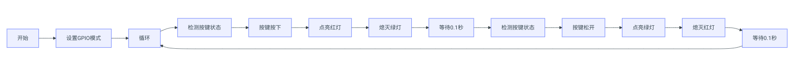
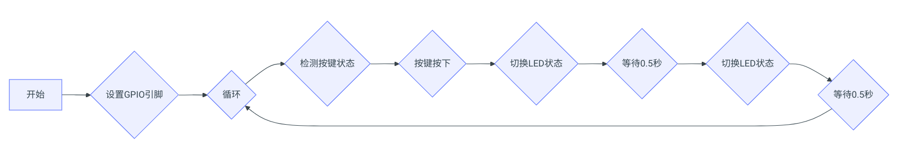

轻触开关实验
Lab3实验报告：轻触开关实验
一、实验介绍
轻触开关模块是最常见的开关模块，内部有一个轻触开关（按键开关）。-引 脚接地，中间引脚接 VCC。按下按键时，S 脚输出为低电平；松开按键时，S 脚 输出为高电平。 该模块的原理图为： 
二、实验原理
在本实验中，使用轻触开关作为树莓派的输入设备。将树莓派某 GPIO 口设
置为输入模式，通过此 GPIO 口检测轻触开关的 S 引脚。当检测到 S 引脚为低电
平时，表示按键被按下，检测到 S 引脚为高电平时，表示按键松开。
通过两种不同颜色的 LED 指示按键的状态。即当按键按下时，一种颜色 LED
亮；按键松开时，另一种 LED 亮。
通过延时函数能有效地减少按键抖动带来的误触发问题。
延时函数：
- 在Python中，time.sleep()函数可以让程序暂停执行一段时间（秒），这对于控制LED的闪烁频率或者按键的检测非常有用。
三、实验步骤
-
硬件连接： 连接示意图如下：

-
编写代码： 使用Mu编辑器或VSCode等工具，编写Python代码来控制双色LED和轻触开关。 代码逻辑如下：
- 设置GPIO引脚的模式（输入/输出）。
- 不断检测轻触开关的状态，根据按键的状态控制LED的亮灭。
- 为了防止按键抖动，可以在检测到按键状态变化后加入一个小的延时。
import RPi.GPIO as GPIO
import time
# Define GPIO pins for the LED (BCM numbering)
RED_PIN = 19 # Red part of the dual-color LED
GREEN_PIN = 20 # Green part of the dual-color LED
SWITCH_PIN = 21 # GPIO pin for the tactile switch
# Setup GPIO mode and pin directions
GPIO.setmode(GPIO.BCM)
GPIO.setup(RED_PIN, GPIO.OUT)
GPIO.setup(GREEN_PIN, GPIO.OUT)
GPIO.setup(SWITCH_PIN, GPIO.IN, pull_up_down=GPIO.PUD_UP)
def switch_with_delay(pin, delay=0.1):
state = GPIO.input(pin)
time.sleep(delay)
return state == GPIO.input(pin)
try:
while True:
if switch_with_delay(SWITCH_PIN):
GPIO.output(RED_PIN, GPIO.HIGH)
GPIO.output(GREEN_PIN, GPIO.LOW)
else:
GPIO.output(RED_PIN, GPIO.LOW)
GPIO.output(GREEN_PIN, GPIO.HIGH)
except KeyboardInterrupt:
print("Exiting...")
finally:
GPIO.cleanup()
- 实验拓展
通过开关和 LED 及相应的编程，实现以下功能： 1. 按一下按键，LED 红灯亮起； 2. 再次按一下按键，LED 红灯闪烁； 3. 再次按一下按键，LED 绿灯亮； 4. 再次按一下按键，LED 绿灯闪烁； 再次按下按键红灯亮起……如此循环。
需要注意消除好按键抖动。
import RPi.GPIO as GPIO
import time
# Define GPIO pins for the LED (BCM numbering)
RED_PIN = 19 # Red part of the dual-color LED
GREEN_PIN = 20 # Green part of the dual-color LED
SWITCH_PIN = 21 # GPIO pin for the tactile switch
# Setup GPIO mode and pin directions
GPIO.setmode(GPIO.BCM)
GPIO.setup(RED_PIN, GPIO.OUT)
GPIO.setup(GREEN_PIN, GPIO.OUT)
GPIO.setup(SWITCH_PIN, GPIO.IN, pull_up_down=GPIO.PUD_UP)
def switch_with_delay(pin, delay=0.1):
state = GPIO.input(pin)
time.sleep(delay)
return state == GPIO.input(pin)
def toggle_led(pin):
GPIO.output(pin, not GPIO.input(pin))
try:
while True:
if switch_with_delay(SWITCH_PIN):
toggle_led(RED_PIN)
time.sleep(0.5)
toggle_led(RED_PIN)
else:
toggle_led(GREEN_PIN)
time.sleep(0.5)
toggle_led(GREEN_PIN)
except KeyboardInterrupt:
print("Exiting...")
finally:
GPIO.cleanup()